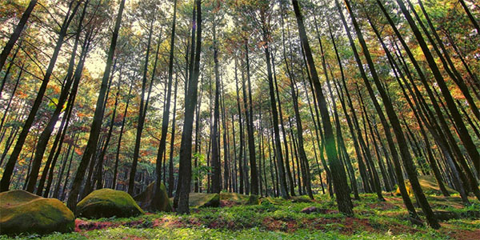
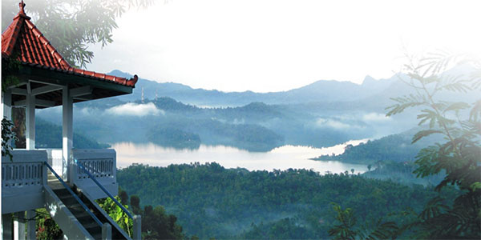
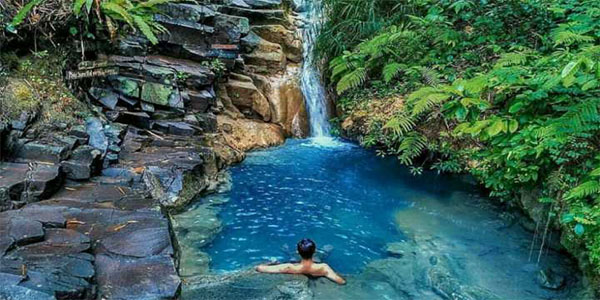

TOURIST DESTINATIONS IN KULONPROGO
Hutan Pinus Girimulyo

Berfoto di hutan pinus memang memiliki kesan istimewa tersendiri. Namun tidak jarang jika banyaknya wisatawan yang datang ke hutan pinus membuatmu sulit mengambil foto yang bagus.
Nah, di Kulon Progo terdapat sebuah hutan pinus yang masih belum banyak diketahui wisatawan. Karena itulah kamu bisa menikmati suasana hutan pinus yang asri dan khas serta berfoto tanpa khawatir ada photobomb.
Kalibiru Dan Pule Payung

Kalau tempat wisata yang satu ini sudah sangat kamu kenal bukan? Kalibiru merupakan destinasi wisata di kulon progo yang terkenal berkat foto-foto yang bertebaran di sosial media.
Dengan pemandangan Waduk Sermo dan pegunungan, Kalibiru memiliki pemandangan yang spektakuler. Tidak hanya bisa berfoto sambil menikmati pemandangan, kamu juga bisa melakukan beragam aktivitas unik seperti sepeda udara, melewati jembatan monyet hingga flying fox. Berani mencobanya?
Kepopuleran Kalibiru tidak heran banyak membuat para wisatawan kecewa karena antrian berfoto yang semakin panjang, apalagi jika di akhir pekan. Nah, sekitar satu kilometer dari Kalibiru terdapat alternatif spot foto gardu pandang bernama Pule Payung. Keindahannya tidak kalah dengan yang ada di Kalibiru.
Kebun Bunga Matahari Pantai Glagah

Kebun bunga matahari tampaknya sedang jadi primadona wisata banyak kalangan. Tidak heran bila di Pantai Glagah juga terdapat sebuah tempat wisata berupa kebun bunga matahari. Di sini, kamu bisa puas berfoto dengan latar belakang bunga matahari yang mengesankan.
bukan hanya Malang dan Bogor, Kulon Progo ternyata punya kebun teh juga lho. Kebun teh ini berada di puncak perbukitan menoreh Kulon Progo. Suasananya sangat sejuk, cocok untuk kamu yang sedang ingin berlibur menikmati suasana alam dan pemandangan hijau.
Air Terjun Kedung Pedut

Kedung dalam bahasa jawa artinya kolam sedangkan pedut artinya kabut. Air terjun ini memang memiliki sebuah kolam alami yang memiliki campuran warna biru dan putih sehingga tampak seperti kabut. Wow, menarik sekali bukan?
Tempat wisata ini merupakan salah satu tempat wisata favorit di Kulon Progo. Kamu bisa seru-seruan main air dan berendam di kolam sepuasnya. Area sekitar air terjun merupakan hutan hujan tropis yang tampak sangat menyejukkan sekali.
Tidak jauh dari lokasi kebun bunga matahari Pantai Glagah, kamu juga bisa menemui area pantai yang tidak kalah menariknya. Di area pantai inilah terdapat pemecah gelombang yang berbentuk seperti kaki segitiga. bentuknya yang unik menjadikan Pantai Glagah tempat yang asyik sebagai tempat berfoto.